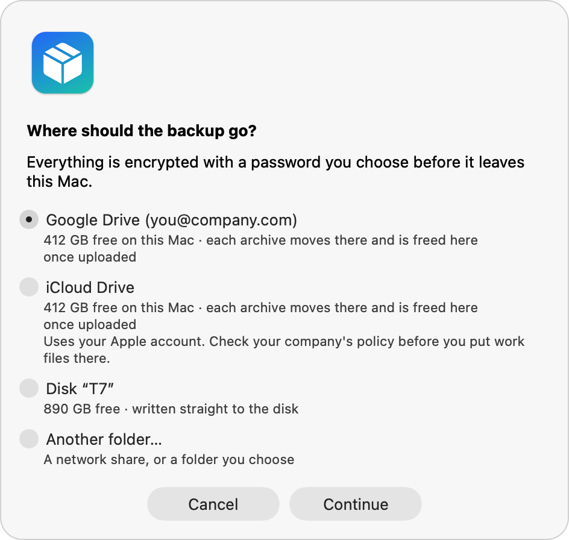
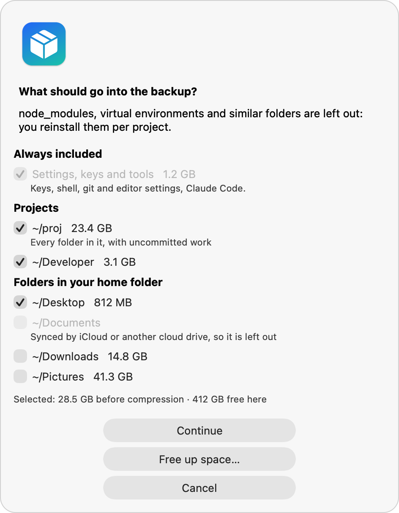
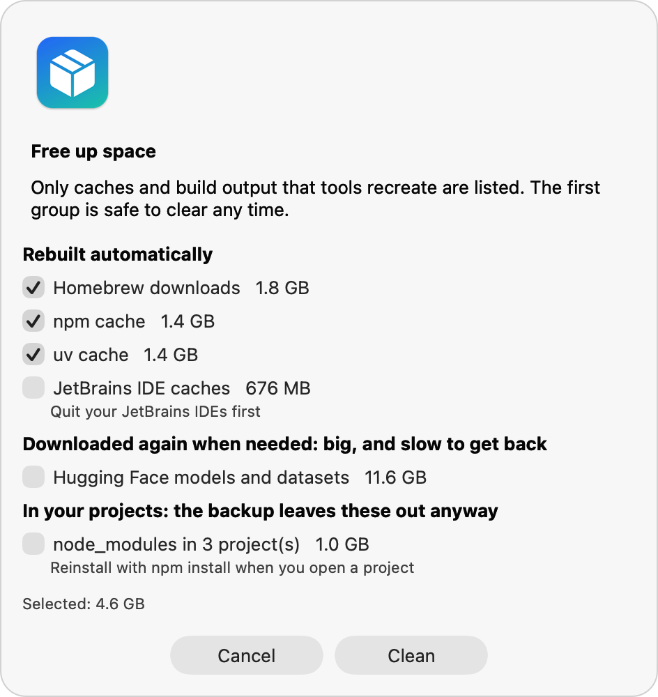

Move to a new Mac.
Keep everything that matters.
Your settings, SSH keys and projects, with uncommitted work, moved to a new company Mac through Google Drive, iCloud Drive or a disk. For when Migration Assistant isn't an option.
- No admin rights
- Nothing to install
- Encrypted with your password
- Open source, MIT


Why
Company Macs start from scratch
IT enrolls the new Mac with Jamf, Intune or Kandji. Migration Assistant is blocked, or would drag along old management profiles. And your account may get a new name, firstname.lastname instead of firstnamelastname. Mac Migrate moves what a developer actually needs, and fixes the paths that change with your username.
Projects, with unpushed work
Every folder in ~/proj, ~/code or ~/Developer, including uncommitted changes, stashes and local branches. node_modules and virtual environments stay behind.
Keys and settings
SSH and GPG keys, cloud CLI configs, shell, git, editor and terminal settings, and Claude Code with its skills and memory.
Your apps, reinstalled
A Brewfile and a setup script with your formulae, apps, App Store apps, VS Code extensions, Node.js version and global tools, matched to Homebrew casks.
How it works
Three steps, either Mac at its own pace
The two Macs never need to be on at the same time or on the same network.
Back up the old Mac
Choose where the backup goes and what goes in, then a password. Archives of up to 8 GB are packed, encrypted, read back and checked.
It moves by itself
Each archive goes to your cloud drive and is freed on the old Mac once uploaded, so a nearly full disk is enough. Or straight to a disk.
Restore on the new Mac
The restore checks every file, puts what you already have aside, rewrites old home paths, and opens the setup script for your apps.
Destinations
Put it wherever you can reach it
Mac Migrate finds the cloud drives and disks on your Mac. It works through their desktop apps, so there is nothing to sign in to twice.
Google Drive
Through Google Drive for desktop. Archives upload one by one and are freed on your Mac once they're in the cloud.
iCloud Drive
The same, with Optimize Mac Storage on. It's your personal Apple account, so check your company's policy first.
OneDrive, Dropbox, Box
Any cloud drive in ~/Library/CloudStorage. For Box, archives are split into parts under its 5 GB limit.
External disk
Written straight to the disk, so your Mac needs no free space. On FAT32 disks, archives are split into 3.9 GB parts.
Free up space
A full disk is no longer a dead end
Developer Macs hold gigabytes of caches that tools rebuild by themselves. Mac Migrate lists them with their sizes and clears what you pick, using each tool's own clean command where there is one.
- Rebuilt automatically, selected by default: Homebrew, npm, pnpm, Yarn, pip, uv, Go, Xcode DerivedData, JetBrains.
- Downloaded again when needed, opt-in: Gradle, Maven, Cargo, Hugging Face models, test browsers.
- In your projects, opt-in:
node_modules, virtual environments, build output. - Never follows a symlink, never leaves your home folder, never touches a running app's cache.

Built for migration day
Careful with your data, at every step
A migration happens once, often on a deadline. Mac Migrate is made to be stopped, resumed and checked.
Encrypted and signed
AES-256 with a key derived from your password. A signed manifest with a checksum per file catches tampering and broken downloads.
Nothing overwritten
What already exists on the new Mac is moved aside first. Folders like Downloads are merged. A Photos library is never mixed with another.
Stop any time
Finished archives are kept, half-written ones removed. Start again and it continues. The Mac stays awake while it works.
New username, same paths
Old home paths are rewritten in shell, git, SSH, cloud CLI and Claude Code settings, also when the new name starts with the old one.
Honest about privacy
macOS asks before it may read Desktop, Documents and Downloads. Without access, the backup stops instead of saving empty archives.
Just shell scripts
bash, tar, openssl and perl that ship with macOS. The app is a thin native front end you build on your Mac from its source.
Get started
Two commands on each Mac
On the old Mac, build the app and choose Back up this Mac. It takes a few seconds and needs no administrator password.
git clone https://github.com/nikolavas/mac-migrate.git
cd mac-migrate && ./make-app.sh --installOn the new Mac, sign in to the cloud drive with your backup (or connect the disk), then restore. The backup's last screen shows the exact command, and curl works before anything else is installed.
curl -fsSL https://github.com/nikolavas/mac-migrate/archive/refs/tags/v2.0.0.tar.gz | tar xz
/bin/bash mac-migrate-2.0.0/restore.sh --from "$HOME/Library/CloudStorage"Prefer Terminal throughout? ./backup.sh --to <folder>, ./restore.sh --from <folder> and ./cleanup.sh do everything the app does. See the README for every option.
Questions
Good to know
Is it allowed to copy work files to a cloud drive?
Check your company's policy, even though everything is encrypted. Your company's Google Drive or OneDrive is usually fine, a personal iCloud account often isn't. If in doubt, use an encrypted external disk.
What happens if I forget the password?
Nobody can open the archives, including you. Save it in your password manager when you choose it. If the old Mac still works, you can make a new backup.
My disk is almost full. Can I still back up?
Yes. To a cloud drive, only one archive at a time needs room on your Mac: it is freed once uploaded. To a disk, your Mac needs no room at all. Free up space clears caches first if you want.
Why is the app built on my Mac instead of downloaded?
A downloaded app that isn't signed by a registered developer is blocked by Gatekeeper, and many company Macs won't let you override that. Built on your Mac from its source, it opens normally, and you can read every line of what it runs.
Does it work with backups made by the earlier version?
Yes. They restore as before. They weren't signed, so the restore asks before it trusts them.
What isn't moved?
Apps (the setup script reinstalls them), ~/Library, Keychain items, browser profiles (use your browser's sync) and dependency folders such as node_modules, which you reinstall per project.